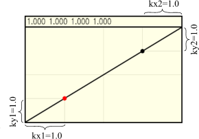

Obviously, Anti-Grain Geometry can render better, but using a simple linear dependance
Pixel Coverage → Brightness is not the best and should be corrected.
In color management it's called Gamma Correction. For gamma correction
I use a simple array of 256 values that give the desired value of brightness
depending on the pixel coverage. If all the values in the array are equal
to their index, i.e., 0,1,2,3,4,… it means that there's no gamma correction.
The array can be calculated using any approach, but the simplest method
is to use a B-Spline curve with two reference points and four coeffitiens
(kx1, ky1, kx2, ky2) that determine its shape. So, I created an application
with a special gamma correction control that allows for calculation of the
array of the gamma values.
It draws 6 very narrow ellipses, 6 circles and some other figures that
can be used as a visual test of the quality of Anti-Aliasing.
|
 Adobe
Adobe Gamma Control (gamma_ctrl.zip)
Gamma Control (gamma_ctrl.zip)